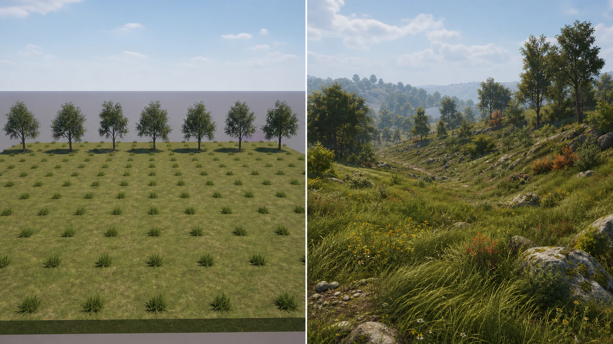

4주차 3교시 — 실습: 자연환경 씬 제작 (학생용)
관련 문서
| 관계 | 문서 |
|---|---|
| 강의 계획서 | 강의계획서: Game Engine II |
| 강의 아웃라인 | 4주차 아웃라인 |
| 1교시 교안 | 4주차 1교시 교안 |
| 2교시 교안 | 4주차 2교시 교안 |
자연환경이 펼쳐진 씬을 만듭니다. 지형(랜드스케이프 또는 Cube) 위에 폴리지로 나무와 풀이 배치되어 있고, 바람에 풀이 흔들리고, 나나이트로 최적화된 상태입니다. 바닥 머테리얼에 노말맵이 적용되어 깊이감이 있습니다.

과제 안내 — 실습 2
이번 실습이 실습 2 과제입니다. 스크린샷을 찍어서 E-Class에 제출합니다.
제출물: 완성 씬 스크린샷 3장을 E-Class에 업로드
| 스크린샷 | 내용 |
|---|---|
| 1장 | 전체 씬 — 뷰포트에서 환경 전체가 보이는 앵글 |
| 2장 | 클로즈업 — 폴리지(나무/풀)가 잘 보이는 가까운 앵글 |
| 3장 | Play 모드 — 캐릭터 시점에서 본 환경 (Alt+P 후 캡처) |
스크린샷 찍는 방법:
뷰포트에서 원하는 앵글을 잡고, 콘솔 명령어로 고해상도 스크린샷을 찍습니다.
- 뷰포트를 클릭하여 포커스를 줍니다
- ` (백틱) 키를 누릅니다. 키보드 좌측 상단, 숫자 1 왼쪽에 있습니다. 화면 하단에 콘솔 입력창이 나타납니다
- 명령어를 입력하고 Enter를 누릅니다
배율 방식으로 찍으려면:
HighResShot 2현재 뷰포트 해상도의 2배 크기로 저장됩니다. 3이나 4로 높일 수 있지만 파일이 매우 커집니다.
해상도를 직접 지정하려면:
HighResShot 1920x10804K로 찍으려면:
HighResShot 3840x2160- 스크린샷은 프로젝트 폴더의
Saved/Screenshots/안에 PNG로 저장됩니다
- 파일 탐색기에서 프로젝트 폴더 > Saved > Screenshots에서 확인할 수 있습니다
Play 모드에서도 동일하게 ` 키로 콘솔을 열고 HighResShot 명령어를 쓸 수 있습니다.
제출 장소: E-Class > 실습과제 2
제출 기준:
- 기본 제출 기준 5가지 충족 여부 (아래 표 참고)
- 스크린샷에서 지형(랜드스케이프 또는 Cube), 폴리지 배치, 노말맵 깊이감이 확인되어야 합니다
주의: 프로젝트도 Ctrl+S로 저장해두세요. 다음 주차에서 이 프로젝트를 이어서 사용할 수 있습니다.
기본 제출 기준 — 5가지
| # | 조건 | 확인 |
|---|---|---|
| 1 | 나나이트 활성화 (모든 폴리지 에셋에 Nanite Enabled: True) | □ |
| 2 | 폴리지로 나무+풀 배치 (Density/Scale 조절되어 자연스러운 밀도) | □ |
| 3 | Wind 활성화 (MI에서 primary+secondary Animation 체크) | □ |
| 4 | 노말맵 적용된 바닥 머테리얼 (Normal Intensity 조절) | □ |
| 5 | 프로젝트 저장 + 스크린샷 3장 제출 | □ |
우수 기준 — 선택
| 항목 | 기준 |
|---|---|
| 랜드스케이프 | Sculpt로 언덕/계곡을 만들고 Smooth로 다듬음 |
| Landscape Material Layer | 2개 이상 레이어로 영역별 머테리얼을 칠함 |
| 계절·색 변화 | Seasons 또는 ColorVariation으로 식물 색감 변화를 만듦 |
| 폴리지 품질 | Preserve Area, Align to Normal 등을 활용해 멀리서도 자연스럽게 보이게 함 |
타임라인 가이드
이 타임라인을 참고하되, 자기 페이스에 맞춰 진행합니다.
| 단계 | 시간 | 내용 |
|---|---|---|
| 단계 1 | 0:00~0:10 | 지형 준비 |
| 단계 2 | 0:10~0:15 | Fab 에셋 + 나나이트 |
| 단계 3 | 0:15~0:30 | 폴리지 배치 |
| 단계 4 | 0:30~0:40 | 머테리얼 커스터마이징 |
| 단계 5 | 0:40~0:45 | 정리 + 저장 + 스크린샷 |
Fab 다운로드는 단계 1에서 먼저 걸어놓고, 지형 만드는 동안 백그라운드로 진행하세요.
단계 1: 지형 준비
두 가지 경로 중 선택합니다.
경로 A — 랜드스케이프 (추천/우수 기준)
2교시에서 배운 랜드스케이프를 직접 만들어봅니다.
- File > New Level > Basic으로 새 레벨을 만듭니다
- 이미 작업 중인 레벨이 있으면 그대로 사용해도 됩니다
- Ctrl+Shift+S로 레벨을 저장합니다
- 경로: Content > Lectures > 4Weeks
- 이름: “Week04_Practice”
- 기존 Floor 액터들을 삭제합니다
- Outliner 검색창에 “floor”를 입력 → 전체 선택(Ctrl+A) → Delete
- Landscape 모드로 전환합니다 (Shift+2)
- Manage 탭 > Create 섹션에서 설정을 확인합니다
- 기본값(8x8 Components) 그대로 두면 됩니다
- Create 버튼을 클릭합니다
- 거대한 평면이 생성됩니다
- Sculpt 탭에서 지형을 조각합니다
- Brush Size를 [ ] 키로 크게 설정합니다 (8000~10000)
- Tool Strength를 0.3, Brush Falloff를 0.5로 설정합니다
- 드래그하여 언덕 2~3개를 만듭니다. 천천히 여러 번 칠하는 게 자연스럽습니다
- Shift+드래그로 언덕 사이에 계곡을 만듭니다
- Ctrl+드래그(Smooth)로 전체를 부드럽게 다듬습니다
- 바닥 머테리얼을 적용합니다
- Selection Mode(Shift+1)로 돌아갑니다
- 뷰포트에서 Landscape를 클릭하여 선택합니다
- Details 패널에서 “landscape material”을 검색합니다
- Landscape Material 슬롯에 Quixel 바닥 MI를 드래그하여 넣습니다
- 텍스처가 너무 크면 MI를 열어서 Tiling 값을 3.0~5.0으로 조절합니다
- 노말맵을 확인합니다
- 같은 MI에서 04-Normal > Normal Intensity가 1~2로 설정되어 있는지 확인합니다
- NormalTexture와 Normal Intensity 체크박스 둘 다 활성화되어 있어야 합니다
경로 B — Cube 바닥 (기본 제출 가능)
랜드스케이프가 어려우면 이 경로로 진행합니다.
- File > New Level > Basic → 저장
- 기존 Floor 삭제
- Place Actors (Shift+1 > Place Actors 패널) > Shapes > Cube를 뷰포트에 드래그합니다
- Location: 0, 0, 0
- Scale: 20, 20, 1
- 넓고 평평한 바닥이 됩니다
- Content Browser에서 Quixel 바닥 MI를 Cube 위에 드래그 앤 드롭합니다
- 랜드스케이프와 달리 Cube에는 직접 드래그 앤 드롭이 됩니다
- MI를 더블클릭하여 04-Normal > Normal Intensity를 1~2로 조절합니다
힌트: 랜드스케이프 Sculpt가 작동하지 않습니다
Landscape 모드(Shift+2)로 전환했는지 확인하세요. Selection Mode에서는 Sculpt가 안 됩니다. 브러시가 안 보이면 마우스가 랜드스케이프 위에 있는지 확인하세요. Cube나 다른 오브젝트 위에서는 표시되지 않습니다.
힌트: 랜드스케이프에 머테리얼이 안 입혀져요
Cube처럼 뷰포트에 드래그 앤 드롭하면 안 됩니다. Selection Mode(Shift+1)에서 Landscape를 클릭하고, Details 패널의 Landscape Material 슬롯에 MI를 넣어야 합니다.
힌트: 언덕이 너무 뾰족합니다
Tool Strength를 0.3 이하로 낮추세요. 천천히 여러 번 칠하는 게 자연스럽습니다. Smooth(Ctrl+드래그)로 다듬으세요.
체크포인트:
단계 2: Fab 에셋 + 나나이트
1교시에서 이미 받았으면 이 단계는 건너뛰어도 됩니다.
- Fab 에셋이 프로젝트에 있는지 확인합니다
- Content > Fab > Megascans > Plants 경로에 European Spindle과 Grass 폴더가 있으면 정상입니다
- 없으면: Content Browser 상단 Fab 버튼 > “European Spindle” + “Grass” 검색 > Add to Project
- 나나이트를 활성화합니다
- Content Browser에서 SM_ 파일들을 모두 선택합니다 (Ctrl+A)
- RMB > Nanite > Enable Nanite
- 에셋 위에 마우스를 올려 Nanite Enabled: True를 확인합니다
- Preserve Area를 설정합니다
- SM_ 전체 선택 > RMB > Asset Actions > Edit Selection in Property Matrix
- NaniteSettings > Preserve Area 체크
힌트: 이미 1교시에서 설정했는데 또 해야 하나요?
같은 프로젝트를 이어서 쓰면 설정이 그대로 남아있습니다. 새 프로젝트를 만들었다면 다시 해야 합니다. 에셋 위에 마우스를 올려 Nanite Enabled: True가 보이면 이미 된 것입니다.
체크포인트:
단계 3: 폴리지 배치
풀과 나무를 폴리지 도구로 배치합니다.
Foliage 모드로 전환합니다 (Shift+3)
에셋을 등록합니다
- Content Browser에서 FT_ (FoliageTypes) 에셋들을 선택합니다
- FT_가 없으면 SM_ 에셋도 가능합니다
- Foliage 패널 하단 “+ Drop Foliage Here” 영역에 드래그 앤 드롭합니다
- 에셋 목록에 등록됩니다. 각 에셋 옆의 체크박스가 활성화되어 있는지 확인합니다
- Paint 도구를 선택하고 뷰포트에서 드래그합니다
- 풀이 칠해집니다. 처음에는 듬성듬성할 수 있습니다
- 밀도와 크기를 조절합니다
- 에셋을 클릭 > Painting 섹션 펼치기
- Density / 1Kuu: 300~500 (1000×1000 Unreal Units 영역 기준)
- Scaling: Uniform 선택, Min 0.6 ~ Max 1.5
- 브러시 크기를 조절합니다
- Brush Size: [ ] 키로 빠르게 조절
- Paint Density: 1.0으로 올리기
- 랜드스케이프 사용 시 확인:
- Foliage 패널 중단 Filters 섹션에서 Landscape 체크박스가 되어있는지 확인합니다
- 이것이 꺼져 있으면 랜드스케이프 위에 폴리지가 칠해지지 않습니다. 가장 흔한 원인이므로 먼저 확인하세요.
- 경사면에서는 에셋 > Placement > Align to Normal 체크
- 배치 전략을 활용합니다
- 나무만 체크 → 언덕 위에 칠하기
- 풀만 체크 → 평지에 칠하기
- 둘 다 체크하고 전체를 칠하면 랜덤 혼합
- 실수한 부분은 Shift+드래그로 지웁니다. Paint 모드에서 Shift만 누르면 즉시 Erase로 전환됩니다
힌트: 폴리지가 랜드스케이프 위에 배치되지 않습니다
Foliage 패널 중단 Filters 섹션에서 Landscape 체크박스가 체크되어 있는지 확인하세요. 이것이 꺼져 있으면 랜드스케이프 위에 칠해지지 않습니다. 가장 먼저 확인할 항목입니다.
힌트: 밀도가 너무 낮습니다
두 가지를 확인하세요. ① Brush Options > Paint Density를 1.0으로 올리기 ② 에셋 클릭 > Painting > Density / 1Kuu를 300~500으로 올리기. Paint Density와 Density / 1Kuu는 별개 설정입니다. 둘 다 올려야 빽빽해집니다.
힌트: 칠했는데 아무것도 표시되지 않습니다
에셋 옆 체크박스가 활성화되어 있는지 확인하세요. 체크 안 된 에셋은 칠해지지 않습니다.
체크포인트:
단계 4: 머테리얼 커스터마이징
폴리지에 바람과 색감 효과를 적용합니다.
- 풀 MI를 엽니다
- Content Browser에서 풀 에셋의 MI_[ID]를 더블클릭합니다
- MI_[ID]Billboard가 아닌 MI[ID]를 여세요. Billboard는 멀리서 2D로 대체하는 용도입니다. 실수로 이것을 열면 바람을 설정해도 적용되지 않습니다
- Wind 설정 (기본 기준)
- Details 패널을 아래로 스크롤하여 10 - Wind 섹션을 펼칩니다
- primary Animation 체크
- secondary Animation 체크
- Local Primary Wind Strength: 3.0
- Local Secondary Wind Strength: 1.0
- Seasons 설정 (우수)
- 11 - Seasons 섹션을 펼칩니다
- use Seasons 체크
- Health Color Overlay: 원하는 계절 색 (가을=주황, 겨울=갈색)
- Health Offset: 5.0
- randomize Health Effect 체크
- ColorVariation 설정 (우수)
- 13 - ColorVariation 섹션을 펼칩니다
- use Color Variations 체크
- Color 01/02/03에 서로 다른 색 3개 설정
- randomize per Plant Part 체크
- 바닥 노말맵을 미세 조정합니다
- 바닥 MI를 열어서 04-Normal > Normal Intensity가 적절한지 확인합니다
- 1~2가 자연스럽습니다
힌트: Billboard MI를 열었습니다
닫으세요. Content Browser에서 MI_[ID]Billboard가 아닌 MI[ID]를 찾아 더블클릭하세요. Billboard는 이름에 “Billboard”가 들어있으니 쉽게 구분할 수 있습니다.
힌트: 바람이 흔들리지 않습니다
확인 순서: ① primary Animation이 인지 ② disable Wind Animation이 체크되어 있으면 해제 ③ 에디터 뷰에서 안 보일 수 있으니 Play 모드(Alt+P)에서 확인해보세요.
힌트: 어떤 계절 느낌을 만들고 싶습니다
가을: Health Color → 주황(R:200, G:120, B:50), Offset 5.0 / 겨울: Health Color → 갈색(R:100, G:80, B:40), Offset 8.0 / 봄: Seasons 끄고 ColorVariation으로 연두빛 넣기 / 여름: Seasons 끄고 기본 초록 유지
체크포인트:
단계 5: 정리 + 저장 + 스크린샷
Foliage 모드에서 Selection Mode로 돌아옵니다 (Shift+1)
전체 씬을 둘러봅니다
- RMB + WASD로 카메라를 이동하여 전체 환경을 확인합니다
- 하늘, 지형, 나무, 풀이 모두 있는지 확인합니다
- Play 모드로 최종 확인합니다 (Alt+P)
- 캐릭터를 WASD로 이동하여 환경 안을 걸어봅니다
- 풀이 흔들리는지 확인합니다
- 바닥에 깊이감(노말맵)이 보이는지 확인합니다
- ESC로 종료합니다
- Ctrl+S로 저장합니다
- 저장하지 않으면 작업 내용이 사라질 수 있습니다
- 스크린샷 3장을 촬영합니다
- 뷰포트에서 전체 씬이 보이는 앵글을 잡고
>HighResShot 1920x1080` - 폴리지가 잘 보이는 가까운 앵글에서 한 장 더
- Play 모드(Alt+P)에서 캐릭터 시점으로 한 장 더
- 저장 경로: 프로젝트폴더/Saved/Screenshots/
일찍 완료한 학생을 위한 확장 과제
시간이 남으면 아래를 시도해보세요. 선택 사항입니다.
확장 과제 1 — 랜드스케이프 심화:
Sculpt 도구를 다양하게 활용해보세요.
- Flatten으로 언덕 위에 평평한 공간을 만들어보세요. 나중에 건물을 놓을 수 있는 터입니다
- Erosion으로 자연 침식 효과를 추가해보세요. 비에 깎인 것 같은 디테일이 생깁니다
- Noise로 평원에 미세한 울퉁불퉁함을 넣어보세요. 완전히 평평한 곳이 줄어듭니다
확장 과제 2 — 폴리지 다양성:
Fab에서 다른 식물 에셋을 추가로 다운로드해보세요.
- 관목, 꽃, 버섯, 돌 등 다양한 에셋을 혼합하면 환경이 풍성해집니다
- 각 에셋별로 Density를 다르게 설정하면 — 나무는 드문드문, 풀은 빽빽하게 — 자연스러운 분포가 됩니다
확장 과제 3 — Landscape Material Layer:
2교시에서 시연한 2개 레이어 칠하기를 직접 해보세요.
- 산 꼭대기에 바위 머테리얼, 경사면에 풀 머테리얼을 Paint로 칠해봅니다
- Fab에서 “Landscape” 또는 “Auto Material”을 검색하면 이미 만들어진 랜드스케이프 머테리얼이 있습니다
확장 과제 4 — UE 5.7 체험:
2교시에서 소개한 최신 기술을 직접 체험해보세요.
- Nanite Foliage: Procedural Vegetation Editor 플러그인을 활성화합니다 (Edit > Plugins에서 검색). Fab에서 “Megaplants”를 다운로드해 나나이트 어셈블리 트리를 배치해봅니다
- PCG: Place Actors에서 PCG Volume을 배치하고, PCG Graph를 만들어 Surface Sampler → Static Mesh Spawner 노드를 연결해봅니다. 규칙 기반 자동 배치를 체험할 수 있습니다
예상 질문과 답변
| 질문 | 답변 |
|---|---|
| “1~2교시에서 만든 프로젝트 그대로 쓸 수 있나요?” | 네. 같은 프로젝트면 에셋과 설정이 남아있습니다. 새 레벨만 만들면 됩니다 |
| “랜드스케이프 안 하면 감점되나요?” | Cube 바닥 경로도 기본 제출이 가능합니다. Landscape Sculpt는 우수 기준으로 보고, 가능하면 도전해보세요 |
| “나나이트 안 켜고 폴리지를 많이 칠해서 프레임이 떨어져요” | SM_ 전체 선택 > RMB > Nanite > Enable Nanite. 이미 배치된 폴리지에도 적용됩니다 |
| “Ctrl+S 했는데 레벨이 저장 안 됐어요” | Ctrl+S는 현재 레벨 저장입니다. File > Save All로 모든 에셋을 함께 저장하는 것도 추천합니다 |
| “폴리지가 랜드스케이프 위에 배치되지 않습니다” | Filters > Landscape 체크하세요. 가장 흔한 실수입니다 |
| “Play에서 바람이 흔들리지 않습니다” | MI에서 primary+secondary Animation 체크 확인. disable Wind Animation이 체크되어 있으면 해제하세요 |
| “스크린샷이 어디에 저장돼요?” | 프로젝트 폴더 > Saved > Screenshots 안에 PNG로 저장됩니다 |
| “HighResShot 명령어가 작동하지 않습니다” | ` (백틱) 키로 콘솔을 열어야 합니다. 키보드 좌측 상단 숫자 1 왼쪽입니다. 뷰포트에 포커스가 있어야 합니다 |